01In a hurry to get started?
- Copy things the way you always do, with Ctrl+C. Clipee keeps each one.
- Press Ctrl+Alt+V wherever you want to paste. The Clipee popup opens beside your cursor.
- Pick a clip with the arrow keys, or start typing to search, then press Enter. Clipee pastes it into the window you were in.
That is all. Everything below is detail you can come back for.
Clipee lives in the system tray, next to the clock. Click its icon to open the popup; right-click it for Settings, Pause capture and Exit. If you cannot see the icon, it may be under the ^ arrow with the other hidden tray icons.
02The popup
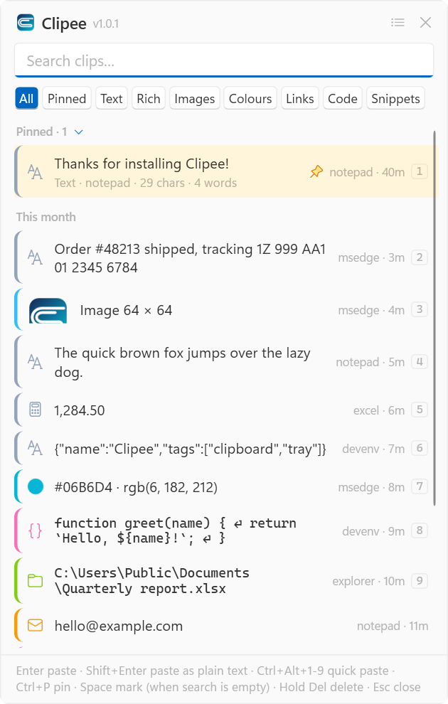
Each row is one thing you copied. It shows:
- A type icon and a coloured stripe on the left: text, rich text, image, colour, link, code, file path and so on.
- A preview of the clip. Colours show a swatch; images show a thumbnail.
- The app it came from and how long ago you copied it.
- A number from 1 to 9 on the first nine rows. Press Ctrl+Alt+ that number to paste it straight away (see Pasting).
Clips are grouped under headings by when you last used them: This month, then one heading for each earlier month (Sep 2026) and, for anything over a year old, each year (2025). The headings stay at the top while you scroll, so you always know how far back you are.
Moving and sizing it
Drag the popup by any empty part: the space around the search box, the filter row or the hint line at the bottom. Drag an edge to resize it; Clipee remembers the size. It always reopens beside your cursor.
If you would rather have it in one place, choose Docked on right edge in Settings → General. It then opens as a full-height panel on the right of your screen.
Press Esc or click anywhere else to close it.
03Pasting
- Enter or double-click
- Pastes the selected clip into the window you were using, with its formatting.
- Shift+Enter
- Pastes as plain text: no fonts, colours or links. Handy when moving text from a web page into an email.
- Ctrl+Alt+1 … 9
- Quick paste. Pastes your 1st to 9th newest clip without opening the popup at all. While the popup is open, it pastes the row with that number.
If you would rather paste yourself, choose Copy only under Settings → General → Paste mode. Then picking a clip just puts it on the clipboard, ready for your own Ctrl+V.
Pasting several clips in a row
The paste stack lines up clips to paste one after another, for example filling in a form.
- Open the popup. With the search box empty, press Space on each clip you want, in order. Each one gets a number.
- Press Enter to load them.
- Click into the first field and press Ctrl+Alt+N. The first clip goes in. Move to the next field and press it again for the next clip.
The tray icon’s tooltip shows how many are left. To abandon the stack, right-click the tray icon and choose Clear paste stack.
Good to know
Clipee waits until you let go of Ctrl and Alt before pasting, so nothing gets mixed up with the keys you are holding.
Some apps run as administrator, and Windows does not let other apps type into them. There Clipee leaves the clip on the clipboard and tells you to press Ctrl+V yourself.
04Searching and filters
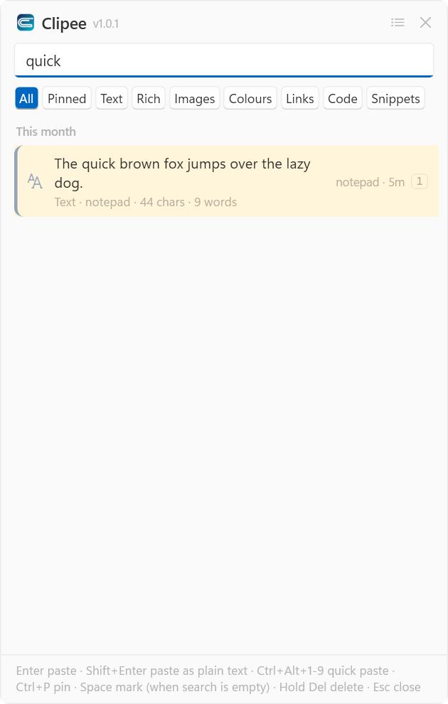
Just start typing when the popup opens. The list narrows with every letter, and the match can be anywhere in the clip, not only at the start.
Filter chips
The row of chips under the search box shows one kind of clip at a time: Pinned, Text, Rich (formatted text), Images, Colours, Links, Code or Snippets. All shows everything.
Typed filters
You can also type a filter into the search box, alone or together with words:
| Type this | To see |
|---|---|
type:link | One kind of clip. Also colour, email, path, code, number, text, rich and image. |
app:excel | Clips copied from one app. |
is:pinned | Only pinned clips. |
is:today | Only today’s clips. |
For example, app:chrome invoice finds clips from Chrome that mention “invoice”. A typed filter takes over from the chip.
06Pinned clips and snippets
Pin a clip you use often and it stays at the top of the popup for good. Pinned clips are never removed by the history limits. Click the arrow beside the Pinned heading to fold them away.
Snippets are text you write once and paste often: a signature, an address, a standard reply. Find them under the Snippets chip in the popup, and manage them in Settings → Snippets.
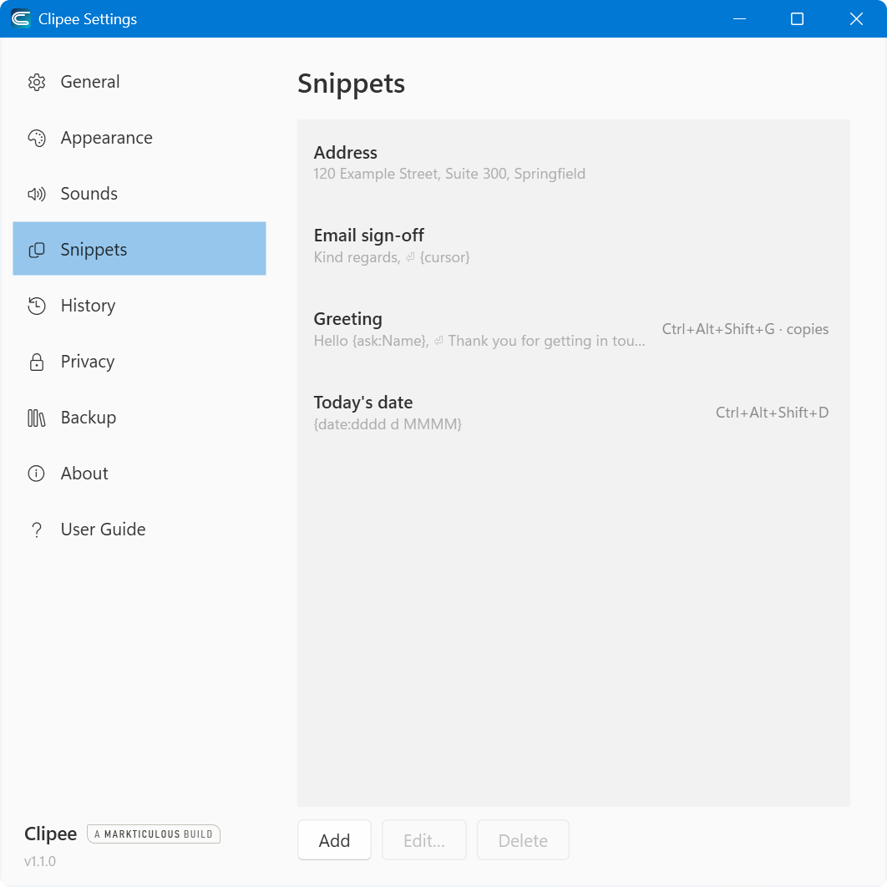
Placeholders
A snippet can contain these, which are filled in when you paste it. In the snippet editor, Insert adds them for you, and the preview shows what will be pasted.
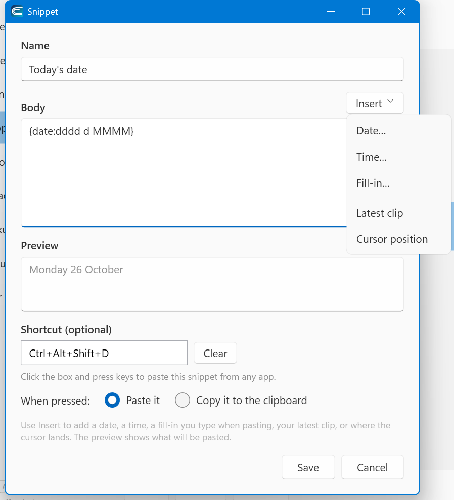
| Placeholder | Becomes |
|---|---|
{date} | Today’s date, like 2026-10-05. |
{time} | The time now, like 14:30. |
{date:dddd d MMMM} | The date in your own format, like Monday 5 October. |
{date+7d} | A week from today. Also -1w, +1M (months), +1y, and for times +90m or +2h. |
{ask:Client} | Asks you for a value when you paste. |
{ask:Tone=Formal|Casual} | Asks you to pick from a list. {ask:Client=Acme} fills in a value you can change. |
{clipboard} | Your newest clip. |
{cursor} | Where the text cursor ends up after pasting, so you can carry on typing in the middle. Clipee pastes the whole snippet, then moves the cursor back to this spot. For example, Hi {cursor}, followed by the rest of a message leaves the cursor right after “Hi ”, ready for you to type a name. Without it, the cursor stays at the end of the pasted text, as with any paste. Only the first {cursor} in a snippet counts. If more than 2,000 characters follow it, the cursor stays at the end. When a snippet shortcut is set to copy instead of paste, the marker is left out and the cursor does not move. |
Your own date and time formats
In the editor, choose Insert › Date… or Time…. Pick a format or type your own, add an offset if you want one, and check the preview before you insert it. To change one later, click inside it and choose Date… or Time… again. Month and day names follow your Windows language.
Fill-ins
When a snippet has fill-ins, Clipee asks for them before pasting. Press Enter to paste, or Esc to cancel without pasting anything. A label used twice is asked once.
Snippet shortcuts
Give a snippet its own shortcut and it pastes straight into the app you are using, without opening Clipee. In the snippet editor, click Shortcut and press the keys you want, such as Ctrl+Alt+Shift+S. A shortcut needs Ctrl, Alt or Win in it. Clipee’s own shortcuts, and ones another snippet already uses, are refused with a short reason. Press Clear to remove a shortcut. Under When pressed, choose Paste it to paste the snippet, or Copy it to the clipboard to only copy it, ready for you to paste with Ctrl+V; Settings → Snippets shows “copies” next to those shortcuts. If another app takes a shortcut, Settings → Snippets marks it “unavailable” so you can pick a new one.
07Settings
Open Settings from the tray icon’s menu, or press Ctrl+, in the popup. Changes take effect straight away; there is no Save button. This guide opens from User Guide at the bottom of the Settings list.
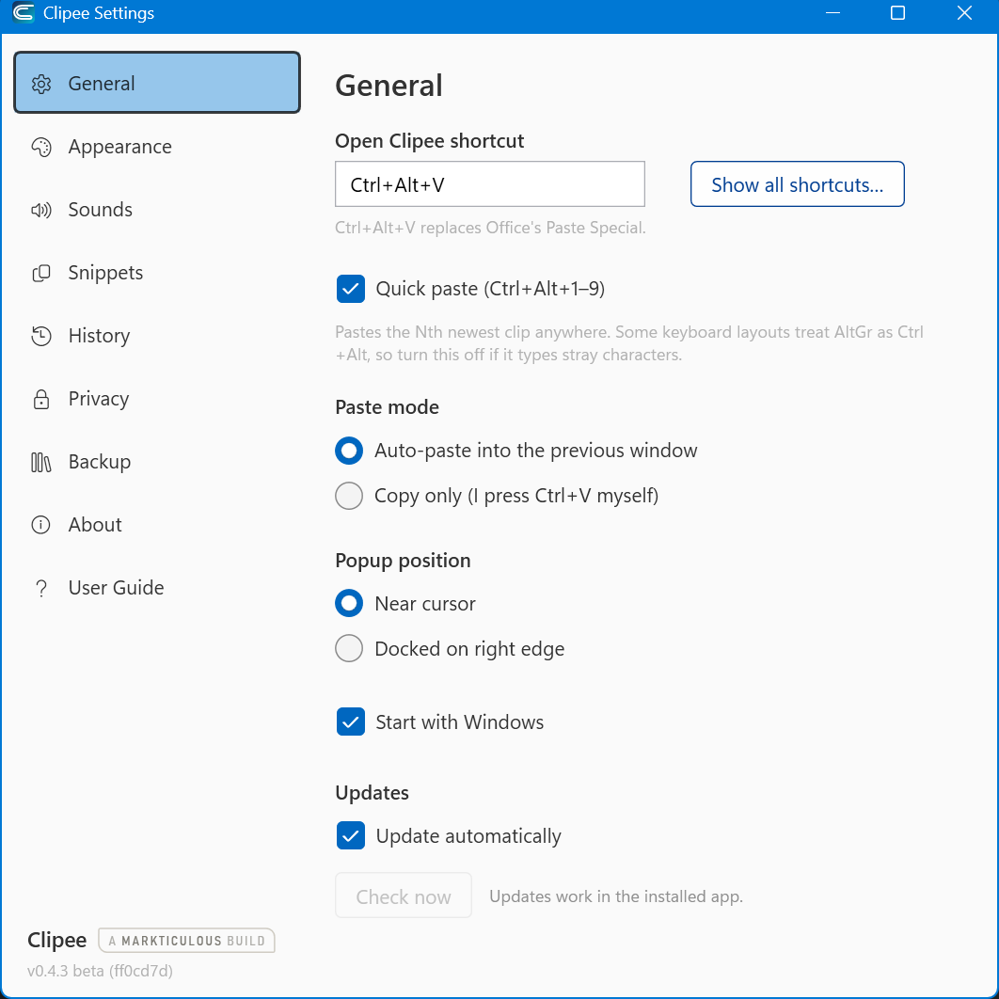
General
- Open Clipee shortcut
- Click the box and press the keys you want instead of Ctrl+Alt+V. Clipee warns you if another app already uses them. Show all shortcuts… below it lists every Clipee shortcut, your snippet shortcuts included (see Keyboard shortcuts).
- Quick paste
- Turns Ctrl+Alt+1–9 on or off. If another app already uses one of those keys, a ⚠ line here says which; the other numbers still work. Clipee also tells you once by the clock, and again only if that changes.
- Paste mode
- Auto-paste types the clip in for you; Copy only leaves the pasting to you.
- Popup position
- Beside your cursor, or docked on the right edge of the screen.
- Start with Windows
- Starts Clipee when you sign in, so it is always collecting.
- Updates
- See Installing and updating.
Appearance
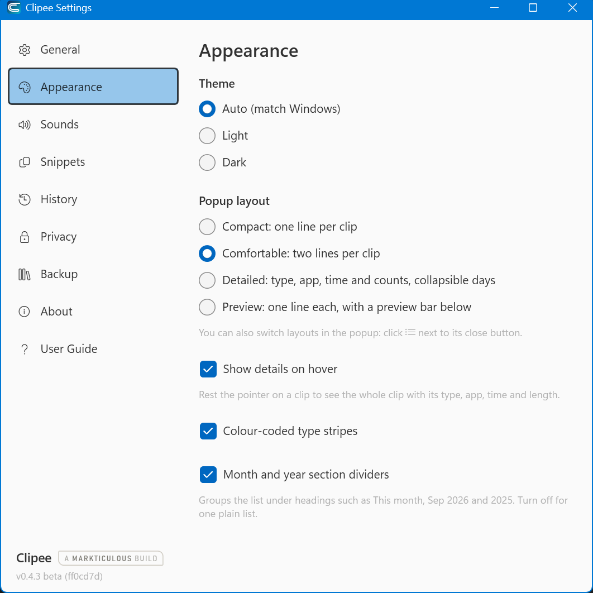
Theme follows Windows by default, or stays Light or Dark. Layout sets how much each row shows. You can also switch layouts straight from the popup: click the list button next to its close button. Here is the same history in each layout, with a code clip selected; in every layout the selected clip sits on a light amber band.
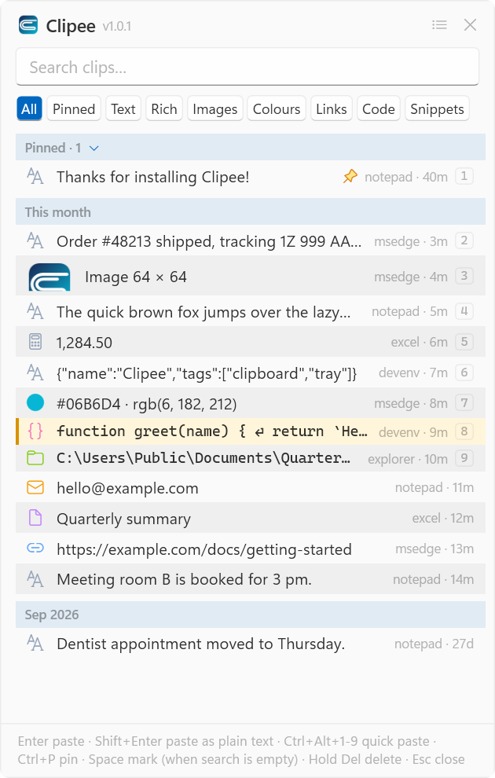
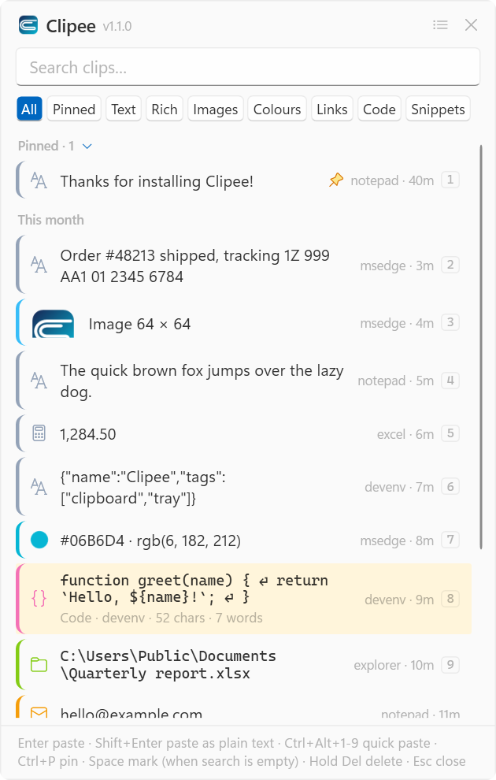
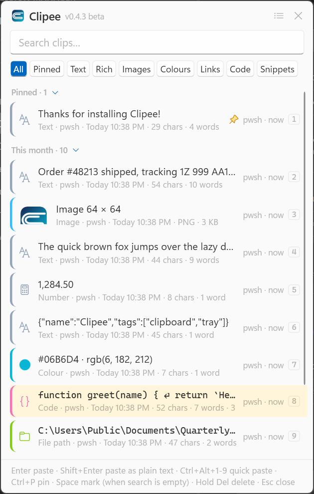
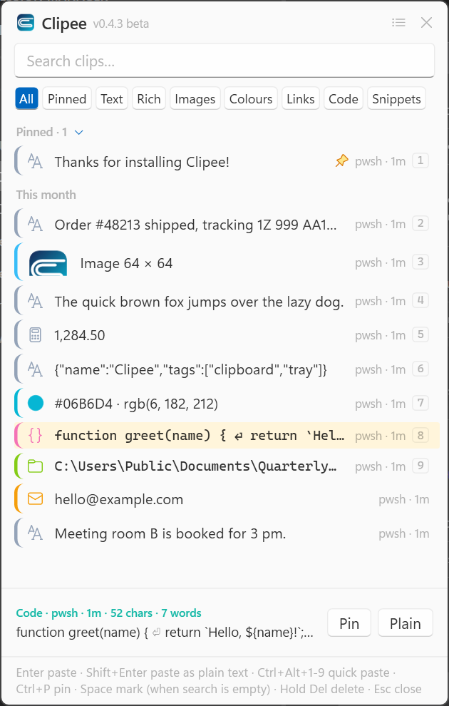
Show details on hover turns the detail tooltip on or off: resting the pointer on a clip, in any layout, shows the whole clip with its type, app, time and length. Type stripes turns the coloured stripe on the left of each row on or off. Compact never shows them. Month and year section dividers turns the headings that group the list (This month, Sep 2026, 2025) on or off; off gives one plain list, with only Pinned keeping its heading.
Sounds
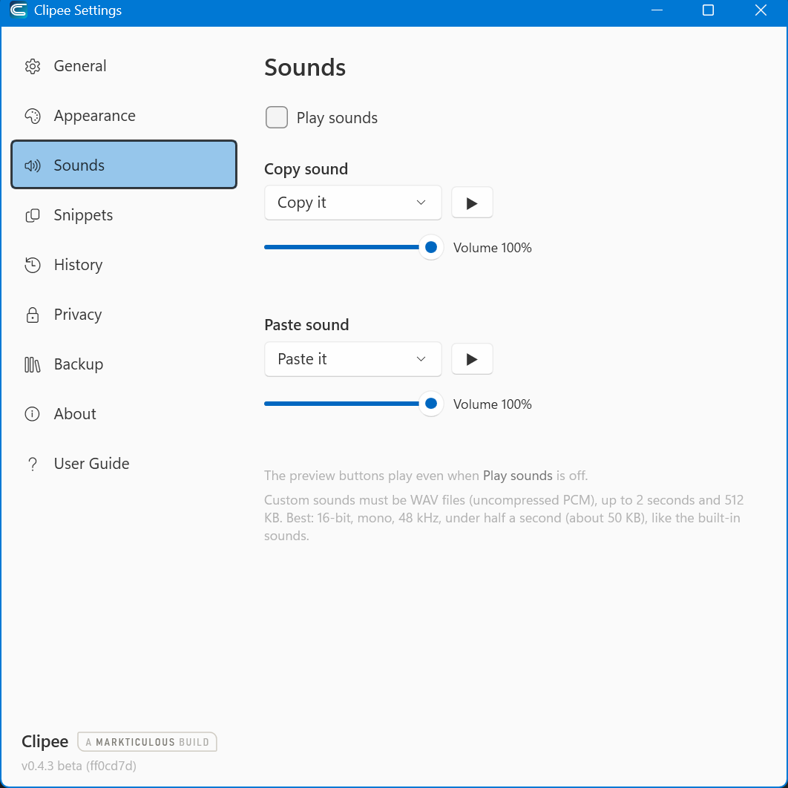
Off to begin with. Turn them on for a small sound when Clipee saves a copy and when it pastes. There are three of each to choose from; the play buttons let you hear them first. The slider under each sets its volume; it plays the sound when you let go, so you can hear the new level.
To use your own sound, choose Custom… and pick a WAV file; Choose… swaps it later. Clipee keeps its own copy, so you can move or delete the original. Custom sounds must be uncompressed WAV files of up to 2 seconds and 512 KB. Short sounds work best: 16-bit, mono, 48 kHz and under half a second, like the built-in ones. Clipee tells you what to change if a file does not fit.
About
Shows your version, links to the release notes, and has a button that opens Clipee’s data folder.
08History and privacy
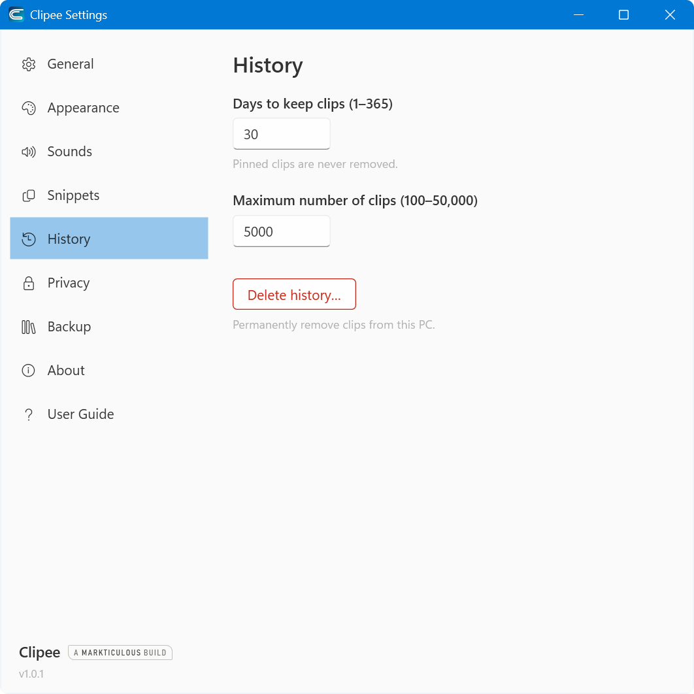
How long clips are kept
Clipee keeps clips for 30 days and up to 5,000 clips; change either in Settings → History (1 to 365 days, 100 to 50,000 clips). Older clips are removed automatically. Pinned clips and snippets are never removed.
Deleting your history
Delete history… clears your clips for good. You will be asked to type DELETE to confirm, and you can choose to keep your pinned clips. Snippets are never touched.
What Clipee does not keep
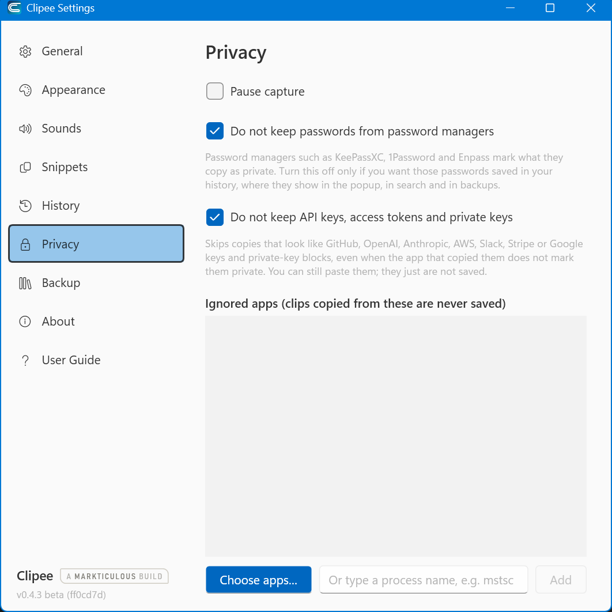
- Passwords from password managers. Most password managers (KeePassXC, 1Password, Enpass and others) mark what they copy as private, and Clipee skips it. If yours does not, add it to the ignored apps. You can turn this off under Settings → Privacy, but then those passwords are saved in your history. Turning it back on deletes them.
- API keys, access tokens and private keys such as GitHub, OpenAI, AWS or Google keys, which web pages copy as ordinary text. You can still paste them; they just are not saved. Turn this off under Settings → Privacy if you want them kept.
- Anything from apps you ignore. Under Settings → Privacy, click Choose apps… and tick the apps you do not want saved; the list shows the apps that have copied into your history. You can also type an app’s process name (for example
mstscfor Remote Desktop), or right-click a clip in the popup and choose Ignore copies from …. Either way, you can delete that app’s clips already saved too (pinned clips are kept). - Anything while capture is paused. Use Pause capture in the tray menu or in Settings before copying something sensitive. Remember to turn it back on.
- Very large images (over 10 MB) are skipped.
Your data stays on your PC
Your clips are stored only on this computer, in %AppData%\Clipee, and they are encrypted. The key is locked to your Windows account, so the history file is unreadable if it is copied anywhere else. Clipee has no account and sends nothing about you anywhere. The only time it goes online is to check for updates, and to check a supporter email if you choose to (see below).
If you tell Clipee you have supported Markticulous, it asks for the email you used on Ko-fi. Clipee sends only a scrambled version of that email (a hash) to markticulous.com to check it, and only when you click Check. Nothing else is sent. If you would rather not, click Skip the check: Clipee takes your word for it.
New PC?
Because the key belongs to this Windows account, your history cannot simply be copied to another computer. Make a backup (next section) and restore it there.
09Backup and restore
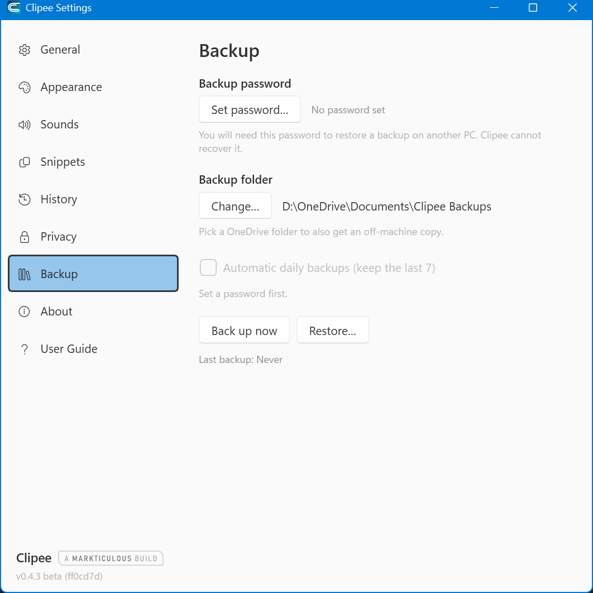
A backup is one file holding all your clips, snippets and settings, locked with a password you choose.
- Click Set password… and type a password twice. Write it down somewhere safe: Clipee cannot recover it, and without it the backup cannot be opened.
- Choose a Backup folder. A folder in OneDrive also gives you a copy away from this PC.
- Turn on Automatic daily backups. Clipee then makes one a day and keeps the last 7. Or click Back up now whenever you like.
Restoring
Click Restore…, pick a backup file (they end in .clipeebak) and enter its password. Clipee replaces your current history with the one in the backup. Just in case, it keeps a copy of what you had before.
10Installing and updating
Installing
- Download Clipee-win-Setup.exe from the Clipee releases page.
- Double-click it. If Windows shows “Windows protected your PC”, click More info, then Run anyway. This appears because Clipee is new and not yet signed with a publisher certificate.
- If double-clicking does nothing, Windows has blocked the downloaded file. Right-click Clipee-win-Setup.exe → Properties, tick Unblock at the bottom of the General tab, click OK, then double-click it again.
- Clipee installs for your account only (no administrator password needed) and starts. If your PC needs the .NET 10 runtime, the installer fetches it first.
You will find Clipee in the Start menu and on your desktop.
Updates
Clipee checks for a new version once a day and downloads it quietly in the background. When it is ready, a notice appears by the clock: click it to restart into the new version. If you do not, the update is applied the next time Clipee closes.
You can also check yourself in Settings → General → Updates with Check now, or turn off Update automatically. When an update is waiting, the tray menu shows Restart to update. An orange dot on the tray icon, and beside General and Updates in Settings, fades in and out while an update downloads and blinks once it is ready.
Uninstalling
Open Windows Settings → Apps → Installed apps, find Clipee and choose Uninstall. Your clips stay in %AppData%\Clipee in case you reinstall; delete that folder if you want them gone too.
11Keyboard shortcuts
To see the shortcuts as they are set on your PC, including your snippet shortcuts, open Settings → General and click Show all shortcuts…. Save as text file… saves the list, with Clipee’s version and the date, to print or keep.
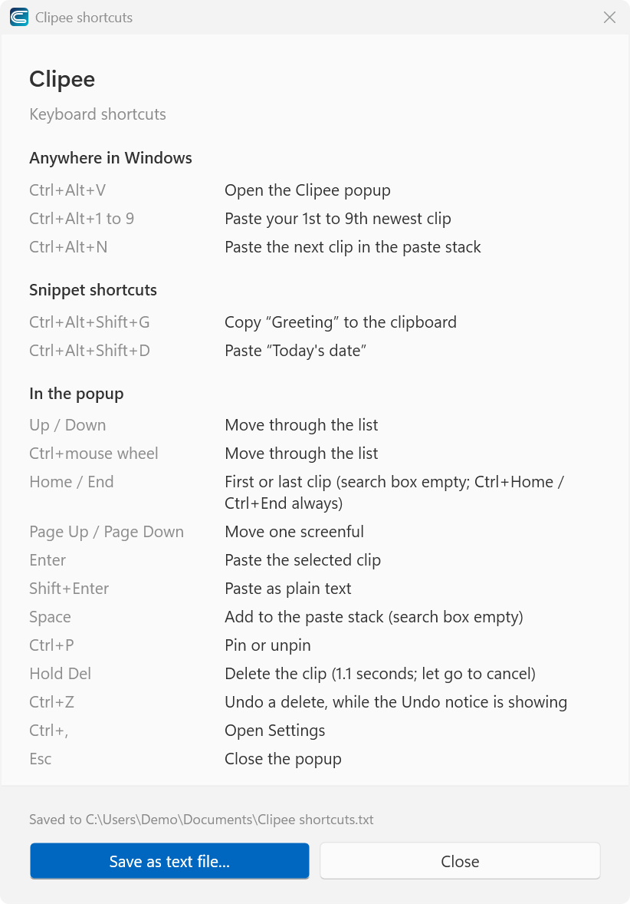
Anywhere in Windows
| Keys | What it does |
|---|---|
| Ctrl+Alt+V | Open the popup (you can change this). |
| Ctrl+Alt+1–9 | Paste your 1st–9th newest clip. |
| Ctrl+Alt+N | Paste the next clip in the paste stack. |
| A snippet’s own shortcut | Paste that snippet, or copy it if you chose that. You set both in the snippet editor. |
In the popup
| Keys | What it does |
|---|---|
| ↑ ↓ | Move through the list. |
| Ctrl+mouse wheel | Move through the list. |
| Home End | Jump to the first or last clip, when the search box is empty. Ctrl+Home and Ctrl+End jump even while you search. |
| Page Up Page Down | Move one screenful up or down the list. |
| Enter | Paste the selected clip. |
| Shift+Enter | Paste as plain text. |
| Space | Add to the paste stack (search box empty). |
| Ctrl+P | Pin or unpin. |
| Hold Del | Delete the clip (1.1 seconds; let go to cancel). |
| Ctrl+Z | Undo a delete, while the Undo notice is showing. |
| Ctrl+, | Open Settings. |
| Esc | Close the popup. |
12If something goes wrong
- The shortcut does not open Clipee
- Another app may own Ctrl+Alt+V; Clipee shows a notice by the clock when this happens. Pick different keys in Settings → General. Until then, click the tray icon.
- Stray characters appear when I type
- On some keyboard layouts the AltGr key counts as Ctrl+Alt, so AltGr+number triggers quick paste. Turn off Quick paste in Settings → General.
- Something I copied is not in the list
- Check that capture is not paused (tray menu), that the app is not on the ignored list, and that it was not a password manager or a very large image.
- A paste did not go in
- The app is probably running as administrator. The clip is on the clipboard: press Ctrl+V.
- “Clipee history was reset”
- The history could not be opened, usually after a Windows password reset or on a new PC. Clipee started a fresh one and kept the old file. Restore your latest backup from Settings → Backup.
- Updates say “Could not reach the update server”
- Check your internet connection and try Check now later. Nothing is lost; Clipee keeps working on the version you have.
- Anything else
- Problems are written to %AppData%\Clipee\error.log. Settings → About has a button that opens that folder. The log never contains your clips.